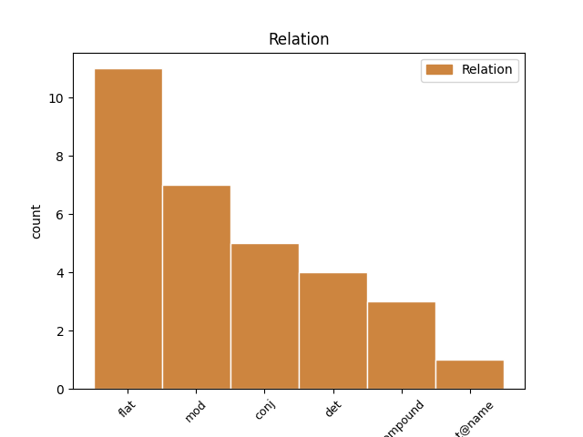
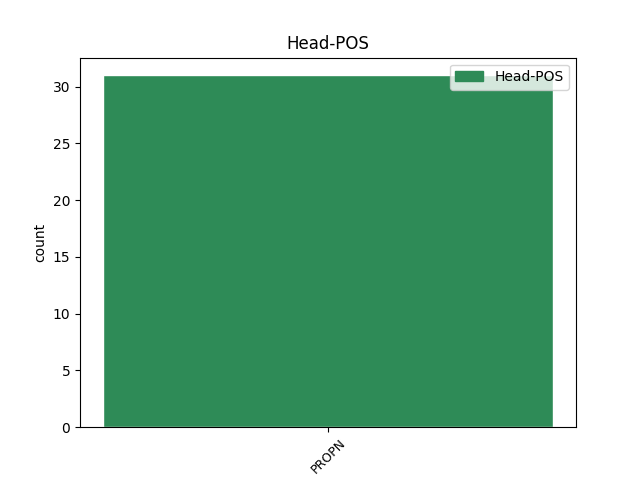
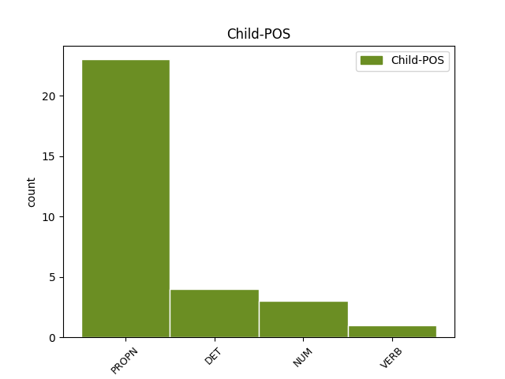

Distribution of features within this leaf



Agreement Rules sorted by frequency.
- When the dependent token is the flat multiword expression(flat) of the head token, and the head token is PROPN and the dependent token is PROPN.
1 Sinisi _ _ _ _ 0 _ _ _
2 ni _ _ _ _ 0 _ _ _
3 Padre padre PROPN _ Gender=Masc|Number=Sing 0 _ _ _
4 Damaso damaso PROPN _ Definite=Ind|Gender=Masc|Number=Sing 3 flat _ _
5 si _ _ _ _ 0 _ _ _
6 Kapitan _ _ _ _ 0 _ _ _
7 Tiago _ _ _ _ 0 _ _ _
8 dahil _ _ _ _ 0 _ _ _
9 sa _ _ _ _ 0 _ _ _
10 hindi _ _ _ _ 0 _ _ _
11 nito _ _ _ _ 0 _ _ _
12 pagtatapat _ _ _ _ 0 _ _ _
13 . _ _ _ _ 0 _ _ _
1 Si _ _ _ _ 0 _ _ _
2 Amenemhat Amenemhat PROPN _ Case=NomAcc|Gender=Masc|Number=Sing 0 _ _ _
3 IV _ _ _ _ 0 _ _ _
4 , _ _ _ _ 0 _ _ _
5 o _ _ _ _ 0 _ _ _
6 Amenemhet Amenemhet PROPN _ Case=NomAcc|Gender=Masc|Number=Sing 2 conj _ _
7 IV _ _ _ _ 0 _ _ _
8 ang _ _ _ _ 0 _ _ _
9 paraon _ _ _ _ 0 _ _ _
10 ng _ _ _ _ 0 _ _ _
11 Ehipto _ _ _ _ 0 _ _ _
12 na _ _ _ _ 0 _ _ _
13 namuno _ _ _ _ 0 _ _ _
14 sa _ _ _ _ 0 _ _ _
15 pagitan _ _ _ _ 0 _ _ _
16 ng _ _ _ _ 0 _ _ _
17 ca _ _ _ _ 0 _ _ _
18 . _ _ _ _ 0 _ _ _
19 1815 _ _ _ _ 0 _ _ _
20 BCE _ _ _ _ 0 _ _ _
21 at _ _ _ _ 0 _ _ _
22 ca _ _ _ _ 0 _ _ _
23 . _ _ _ _ 0 _ _ _
24 1806 _ _ _ _ 0 _ _ _
25 BCE _ _ _ _ 0 _ _ _
26 . _ _ _ _ 0 _ _ _
1 Mula _ _ _ _ 0 _ _ _
2 1991 _ _ _ _ 0 _ _ _
3 hanggang _ _ _ _ 0 _ _ _
4 2009 _ _ _ _ 0 _ _ _
5 , _ _ _ _ 0 _ _ _
6 legal _ _ _ _ 0 _ _ _
7 na _ _ _ _ 0 _ _ _
8 binubuo _ _ _ _ 0 _ _ _
9 ang ang DET _ Definite=Def|Gender=Masc|Number=Sing|PronType=Art 10 det _ _
10 Unyong unyong PROPN _ Gender=Masc|Number=Sing 0 _ _ _
11 Europeo _ _ _ _ 0 _ _ _
12 ( _ _ _ _ 0 _ _ _
13 UE _ _ _ _ 0 _ _ _
14 ) _ _ _ _ 0 _ _ _
15 ng _ _ _ _ 0 _ _ _
16 tatlong _ _ _ _ 0 _ _ _
17 haligi _ _ _ _ 0 _ _ _
18 . _ _ _ _ 0 _ _ _
1 Nagkataong _ _ _ _ 0 _ _ _
2 nasatabing _ _ _ _ 0 _ _ _
3 hospital _ _ _ _ 0 _ _ _
4 ( _ _ _ _ 0 _ _ _
5 Peter _ _ _ _ 0 _ _ _
6 Bent _ _ _ _ 0 _ _ _
7 Brigham Brigham PROPN _ Case=NomAcc|Gender=Masc|Number=Sing 8 compound _ _
8 Hospital Hospital PROPN _ Case=NomAcc|Gender=Masc|Number=Sing 0 _ _ _
9 ) _ _ _ _ 0 _ _ _
10 and _ _ _ _ 0 _ _ _
11 dalubhasa _ _ _ _ 0 _ _ _
12 sa _ _ _ _ 0 _ _ _
13 rennin _ _ _ _ 0 _ _ _
14 na _ _ _ _ 0 _ _ _
15 si _ _ _ _ 0 _ _ _
16 Dr _ _ _ _ 0 _ _ _
17 . _ _ _ _ 0 _ _ _
1 Si _ _ _ _ 0 _ _ _
2 Lavigne _ _ _ _ 0 _ _ _
3 sa _ _ _ _ 0 _ _ _
4 pagtatanghal _ _ _ _ 0 _ _ _
5 niya _ _ _ _ 0 _ _ _
6 sa _ _ _ _ 0 _ _ _
7 Geneva _ _ _ _ 0 _ _ _
8 noong _ _ _ _ 0 _ _ _
9 9 9 NUM _ Definite=Ind|Degree=Pos|Gender=Masc|Number=Sing|NumType=Ord 10 mod _ _
10 Hunyo hunyo PROPN _ Definite=Ind|Gender=Masc|Number=Sing 0 _ _ _
11 2005 _ _ _ _ 0 _ _ _
12 . _ _ _ _ 0 _ _ _
1 Magkasamang _ _ _ _ 0 _ _ _
2 ipinalabas _ _ _ _ 0 _ _ _
3 nina _ _ _ _ 0 _ _ _
4 Tassilo _ _ _ _ 0 _ _ _
5 von _ _ _ _ 0 _ _ _
6 Heydebrand _ _ _ _ 0 _ _ _
7 und _ _ _ _ 0 _ _ _
8 der _ _ _ _ 0 _ _ _
9 Lasa _ _ _ _ 0 _ _ _
10 at _ _ _ _ 0 _ _ _
11 Paul _ _ _ _ 0 _ _ _
12 Rudolf _ _ _ _ 0 _ _ _
13 von _ _ _ _ 0 _ _ _
14 Bilguer _ _ _ _ 0 _ _ _
15 ang _ _ _ _ 0 _ _ _
16 Handbuch Handbuch PROPN _ Case=Dat|Gender=Neut|Number=Sing 0 _ _ _
17 des _ _ _ _ 0 _ _ _
18 Schachspiels Schachspiel PROPN _ Case=Gen|Gender=Neut|Number=Sing 16 mod _ _
19 ( _ _ _ _ 0 _ _ _
20 Libreto _ _ _ _ 0 _ _ _
21 ng _ _ _ _ 0 _ _ _
22 Ahedres _ _ _ _ 0 _ _ _
23 ) _ _ _ _ 0 _ _ _
24 , _ _ _ _ 0 _ _ _
25 ang _ _ _ _ 0 _ _ _
26 kauna _ _ _ _ 0 _ _ _
27 - _ _ _ _ 0 _ _ _
28 unahang _ _ _ _ 0 _ _ _
29 detalyadong _ _ _ _ 0 _ _ _
30 manwal _ _ _ _ 0 _ _ _
31 ng _ _ _ _ 0 _ _ _
32 pag _ _ _ _ 0 _ _ _
33 - _ _ _ _ 0 _ _ _
34 aaral _ _ _ _ 0 _ _ _
35 ng _ _ _ _ 0 _ _ _
36 ahedres _ _ _ _ 0 _ _ _
37 . _ _ _ _ 0 _ _ _
1 Si _ _ _ _ 0 _ _ _
2 Chris Chris PROPN _ Case=NomAcc|Gender=Masc|Number=Sing 0 _ _ _
3 Culliver Culliver PROPN _ Case=NomAcc|Gender=Masc|Number=Sing 2 flat@name _ _
4 ay _ _ _ _ 0 _ _ _
5 ay _ _ _ _ 0 _ _ _
6 may _ _ _ _ 0 _ _ _
7 taas _ _ _ _ 0 _ _ _
8 na _ _ _ _ 0 _ _ _
9 6 _ _ _ _ 0 _ _ _
10 feet _ _ _ _ 0 _ _ _
11 at _ _ _ _ 0 _ _ _
12 1 _ _ _ _ 0 _ _ _
13 inch _ _ _ _ 0 _ _ _
14 . _ _ _ _ 0 _ _ _
1 Siya _ _ _ _ 0 _ _ _
2 ang _ _ _ _ 0 _ _ _
3 pangatlong _ _ _ _ 0 _ _ _
4 Koreano koreano PROPN _ Definite=Ind|Gender=Masc|Number=Sing 0 _ _ _
5 na _ _ _ _ 0 _ _ _
6 naging nagiť VERB _ Animacy=Inan|Case=Loc|Degree=Pos|Gender=Masc|Number=Sing 4 mod _ _
7 prominente _ _ _ _ 0 _ _ _
8 sa _ _ _ _ 0 _ _ _
9 telebisyon _ _ _ _ 0 _ _ _
10 sa _ _ _ _ 0 _ _ _
11 Pilipinas _ _ _ _ 0 _ _ _
12 , _ _ _ _ 0 _ _ _
13 pagkatapos _ _ _ _ 0 _ _ _
14 nina _ _ _ _ 0 _ _ _
15 Sandara _ _ _ _ 0 _ _ _
16 Park _ _ _ _ 0 _ _ _
17 at _ _ _ _ 0 _ _ _
18 Ryan _ _ _ _ 0 _ _ _
19 Bang _ _ _ _ 0 _ _ _
20 . _ _ _ _ 0 _ _ _
Disagree Examples:
1 Ang ang PROPN _ Case=Nom|Gender=Masc|Number=Sing 0 _ _ _
2 Lady lady PROPN _ Case=Nom|Gender=Fem|Number=Sing 1 flat _ _
3 Godiva _ _ _ _ 0 _ _ _
4 ( _ _ _ _ 0 _ _ _
5 1877 _ _ _ _ 0 _ _ _
6 ) _ _ _ _ 0 _ _ _
7 na _ _ _ _ 0 _ _ _
8 ipininta _ _ _ _ 0 _ _ _
9 ni _ _ _ _ 0 _ _ _
10 William _ _ _ _ 0 _ _ _
11 Holmes _ _ _ _ 0 _ _ _
12 Sullivan _ _ _ _ 0 _ _ _
13 ( _ _ _ _ 0 _ _ _
14 1836 _ _ _ _ 0 _ _ _
15 - _ _ _ _ 0 _ _ _
16 1908 _ _ _ _ 0 _ _ _
17 ) _ _ _ _ 0 _ _ _
18 . _ _ _ _ 0 _ _ _
1 Ang ang PROPN _ Case=Nom|Gender=Masc|Number=Sing 0 _ _ _
2 Lady _ _ _ _ 0 _ _ _
3 Godiva Godiva PROPN _ Case=Nom|Gender=Fem|Number=Sing 1 flat _ _
4 ( _ _ _ _ 0 _ _ _
5 1877 _ _ _ _ 0 _ _ _
6 ) _ _ _ _ 0 _ _ _
7 na _ _ _ _ 0 _ _ _
8 ipininta _ _ _ _ 0 _ _ _
9 ni _ _ _ _ 0 _ _ _
10 William _ _ _ _ 0 _ _ _
11 Holmes _ _ _ _ 0 _ _ _
12 Sullivan _ _ _ _ 0 _ _ _
13 ( _ _ _ _ 0 _ _ _
14 1836 _ _ _ _ 0 _ _ _
15 - _ _ _ _ 0 _ _ _
16 1908 _ _ _ _ 0 _ _ _
17 ) _ _ _ _ 0 _ _ _
18 . _ _ _ _ 0 _ _ _
1 Ang _ _ _ _ 0 _ _ _
2 Sura sura PROPN _ Case=Nom|Gender=Fem|Number=Sing 0 _ _ _
3 Yunus yunus PROPN _ Case=Nom|Gender=Masc|Number=Sing 2 flat _ _
4 ( _ _ _ _ 0 _ _ _
5 Arabiko _ _ _ _ 0 _ _ _
6 : _ _ _ _ 0 _ _ _
7 سورة _ _ _ _ 0 _ _ _
8 يونس _ _ _ _ 0 _ _ _
9 , _ _ _ _ 0 _ _ _
10 Sūratu _ _ _ _ 0 _ _ _
11 Yūnus _ _ _ _ 0 _ _ _
12 , _ _ _ _ 0 _ _ _
13 Jonas _ _ _ _ 0 _ _ _
14 ) _ _ _ _ 0 _ _ _
15 ang _ _ _ _ 0 _ _ _
16 ika-10 _ _ _ _ 0 _ _ _
17 kabanata _ _ _ _ 0 _ _ _
18 ng _ _ _ _ 0 _ _ _
19 Koran _ _ _ _ 0 _ _ _
20 na _ _ _ _ 0 _ _ _
21 may _ _ _ _ 0 _ _ _
22 109 _ _ _ _ 0 _ _ _
23 talata _ _ _ _ 0 _ _ _
24 . _ _ _ _ 0 _ _ _
1 Fritz _ _ _ _ 0 _ _ _
2 Quinanola _ _ _ _ 0 _ _ _
3 * _ _ _ _ 0 _ _ _
4 Malou _ _ _ _ 0 _ _ _
5 Inocando Inocando PROPN _ Case=Nom|Gender=Neut|NameType=Com|Number=Sing|Polarity=Pos 0 _ _ _
6 - _ _ _ _ 0 _ _ _
7 Tabar Tabar PROPN _ Animacy=Anim|Case=Nom|Gender=Masc|NameType=Sur|Number=Sing|Polarity=Pos 5 mod _ _
8 * _ _ _ _ 0 _ _ _
9 Fr _ _ _ _ 0 _ _ _
10 . _ _ _ _ 0 _ _ _